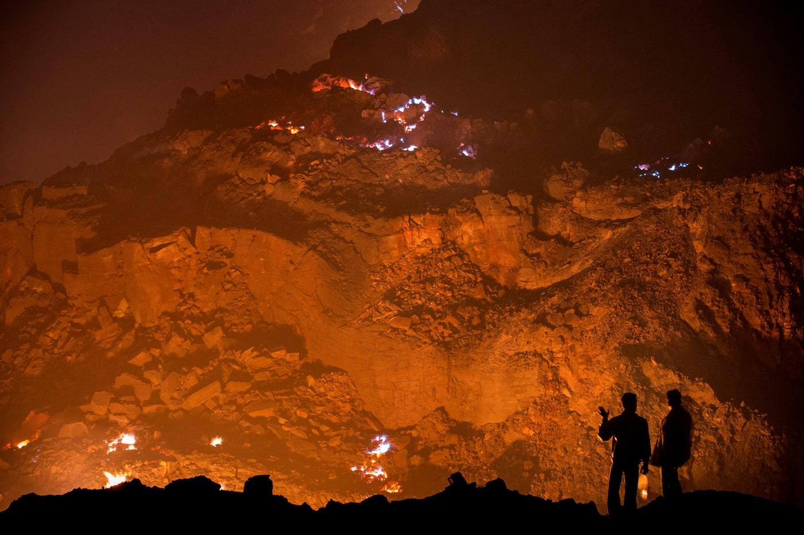
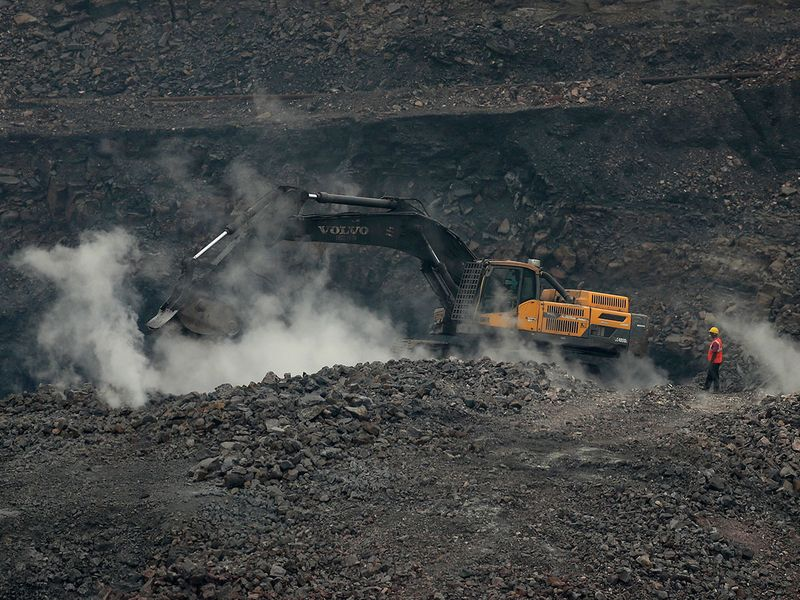
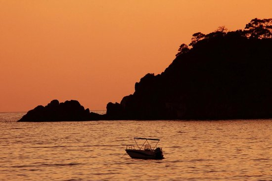
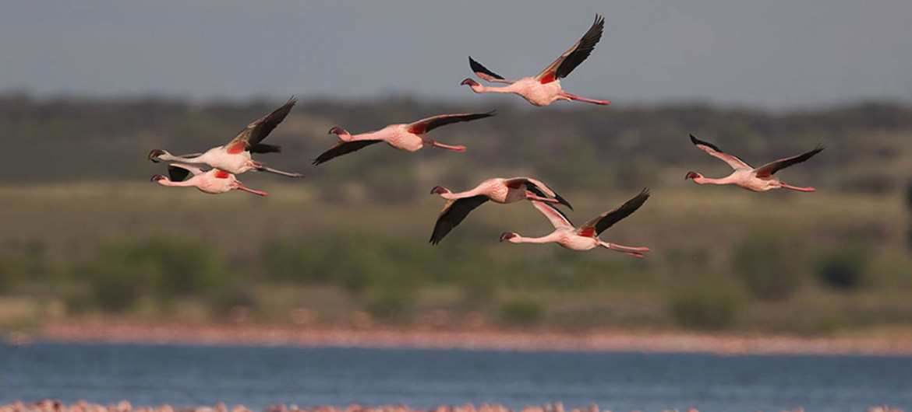

Dhanbad District was constituted in 1956 by carving out the old Dhanbad subdivision, Chas and Chandankiyari police stations of the Sadar subdivision of the erstwhile Manbhum District. The coal capital, Dhanbad in Jharkhand also yielded relics of Buddhist statues along with an ancient pillar belonging to Ashokan times. It locates many temples, hills, rivers and rivulets, which are enjoyed as best weekend getaways by both locals and tourists. Chati Gobindpur village here enfolds two ancient pillars those are associated with Emperor Ashoka and the Afghan Chief Sher Shah. Then there is Bekar Bandh, known as a pretty pond enclosed by beautiful scenery, visitors enjoy the boating facility at this site. Lord Shiva is revered here as Pandewesha rMahadev, his temple is associated with a legend of the Pandavas, heroes of the Mahabharata era. The beautiful Panchet Dam roars with waters of the Damodar River, and the surrounding hills of Panchet makes for an amazing backdrop for picnickers and holiday makers.
Jharia is famous for a coal field fire that has burned underground for nearly a century. A 2007 estimate, described 37 million tons of coal consumed by the fires since their start.
The first fire was detected in 1916.According to records, it was the Khas Jharia mines of Seth Khora Ramji Chawda (1860–1923), who was a pioneer of Indian coalmines, whose mines were one of the firsts to collapse in underground fire in 1930. Two of his collieries, Khas Jharia and Golden Jharia, which worked on maximum 260-foot-deep shafts, collapsed due to now infamous underground fires, in which their house and bungalow also collapsed on 8 November 1930, causing 18 feet subsidence and widespread destruction. The fire never stopped despite sincere efforts by mines department and railway authorities and in 1933 flaming crevasses lead to exodus of many residents. The 1934 Nepal–Bihar earthquake led to further spread of fire and by 1938 the authorities had declared that there is raging fire beneath the town with 42 collieries out of 133 on fire.
In 1972, more than 70 mine fires were reported in this region. As of 2007, more than 400,000 people who live in Jharia are living on land in danger of subsidence due to the fires, and according to Satya Pratap Singh, "Jharia township is on the brink of an ecological and human disaster". The government has been criticized for a perceived lackadaisical attitude towards the safety of the people of Jharia. Heavy fumes emitted by the fires lead to severe health problems such as breathing disorders and skin diseases among the local population.
Also Jharia coalfield is a large coal field located in the east of India in Jharia, Jharkhand. Jharia represents the largest coal reserves in India having estimated reserves of 19.4 billion tonnes of coking coal. The coalfield is an important contributor to the local economy, employing much of the local population either directly or indirectly.
In 1942, during the course of World War II, a flood occurred in the Damodar valley region that cut Calcutta off from the rest of the country for a period of 10 weeks. Soon the government sprang into action & called Mr. W.L.Voord, a civil engineer of Tennessee Valley Authority (TVA). He designed the plan of the dams by 1945. Finally the first dam of independent India came up on July 7, 1953 at Tilaiya. Soon Konar, Maithon & Panchet Dam followed in its footsteps in 1955, 1957 and 1959 respectively.
Named after, Mai-ka-sthan or abode-of-the-mother, from the temple of Kalyaneshwari in its vicinity, it is located 46 kms from Dhanbad. Apart from emerging a prominent religious destination, Maithon is also the site of the country’s first multipurpose project, it came into existence 1958 and has the biggest reservoir of Damodar Valley Corporation (DVC), on River Barakar. Height of the embankment is 56 metres and its length 4357 meteres.
It is also known for its underground hydel power station, the first of its kind in Southeast Asia. You can unwind form your stress even in the midst of the water. A deer park that has come up recently is an added attraction to your trip..along with a traditional fun boating experience under the blue sky.
Here, the wild torrents of the locally flowing rivulet Jamunia, gurgles down in playful mirth and mischief across the rocks that have the natural terrain of steps. It tumbles down from a fairly low height of about 10 metres. However, the beauty of the waterfalls lies in its cascading effect, over the rocks. This place is most visited during Christmas and New year.However, it is also a retreat for those wanting to rejuvenate themselves from the mundane humdrums in solitude.
There are also other travelers who prefer to spend few days over here to experience the beauty of the place and its unimaginable stillness.
Topchanchi Lake is bliss in solitude, and an avian paradise. Surrounded by green hillocks and plalash forests, this man-made lake was built in 1924, during the days of British Raj. To this day, it provides water to the major parts of the coal-city. The water body is now maintained by Coal Mining Area Development Authority. The nearest railway station at Gomoh, is just 6 kms away. It is the same historic site from where Netaji Subhash Chandra Bose boarded a train on Jan. 18, 1941, for his departure from India, disguised as a Pathan LIC agent. The railway station has been christened in his name and two bust sized statues of the leader have been installed both in the railway station and in the Topchanchi market.
It is said that this man-made lake has the structure of the India's map. Isn't it amazing? Another beautiful attraction being that during the winters many ecstatic migratory birds from across the world can be seen enjoying themselves on the lake. They look so heavenly that you would wanna admire them for hours..!!